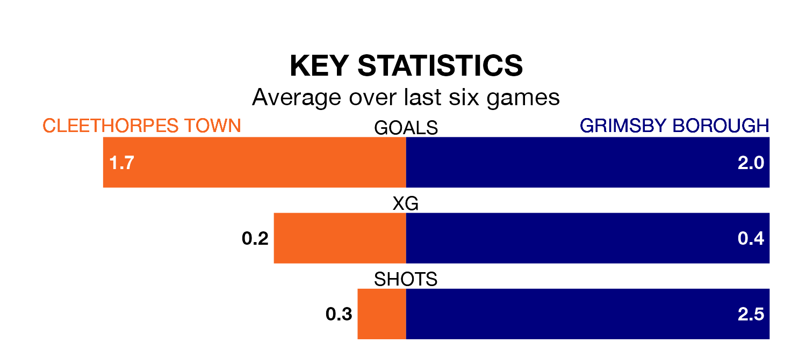

Cleethorpes Town host Grimsby Borough on Monday at the Bradley Community Stadium in the Northern Premier League Division One East.
In their last league match, on Saturday, Cleethorpes beat Winterton Rangers 2-0 away, with their goal scored by (two).
Grimsby also won, 3-2 at home against Stocksbridge Park Steels, with (three) scoring their goals.
With 46 goals in 33 games so far this season, Grimsby are scoring at below the league average rate with 1.4 goals per game. And they are conceding at an average rate, letting in 48 goals at a rate of 1.5 per game.
Cleethorpes, meanwhile, are average scorers, with 1.5 goals per game. They have conceded 1.4 goals per game.
Town are 13th in the table after 31 games, of which they have won 10 and drawn 10, earning 40 points.
Borough are three places ahead of the home team in 10th, with 13 wins and five draws putting them on 44 points.
In the last three years, Cleethorpes and Grimsby have played each other on three occasions. Grimsby won one of them and they drew the other.
Their last meeting was on December 26, when Grimsby won 1-0 at home.
Cleethorpes are in mixed form in the Northern Premier League Division One East, with two wins and two draws from their last six games.
With three wins and a draw over that period, the visitors' form is slightly better – they have taken 10 points from 18, compared to Cleethorpes's eight.
Updated: 10:31 (UTC), 31/03/24